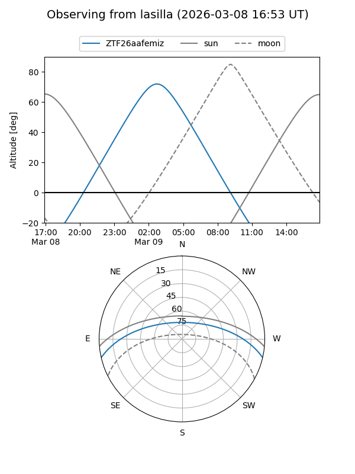
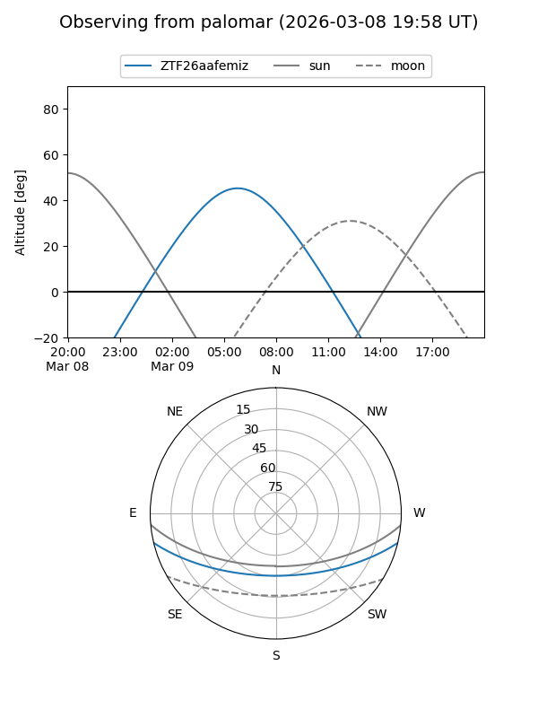

ZTF26aafemiz
Target ZTF26aafemiz at 2026-03-09 07:19
Aliases and brokers:
FINK: link
Lasair: link
ALeRCE: link
alt names
ZTF26aafemiz (ztf,fink_ztf)
Coordinates:
equatorial (ra, dec) = 136.4420,-11.22150
equatorial (HMS+DMS) = 09:05:46.09,-11:13:17.40
galactic (l, b) = (240.1668,+23.21230)
Flags:
Photometry:
last ztfg=18.98
1 ztfg detections
Lightcurve
Visibility


Additional plots